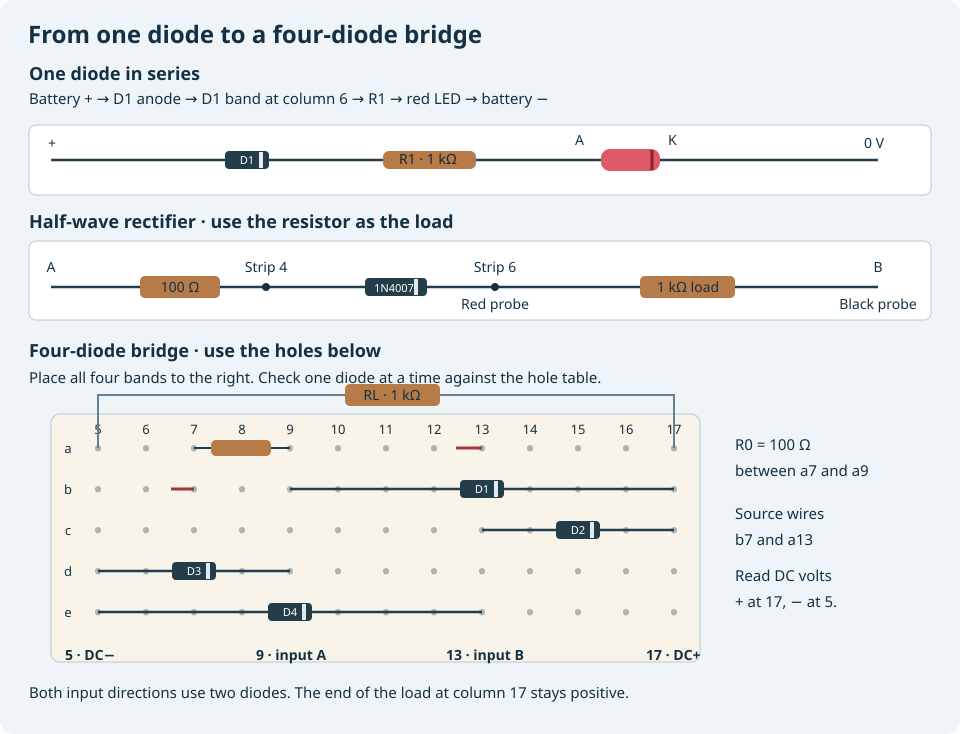
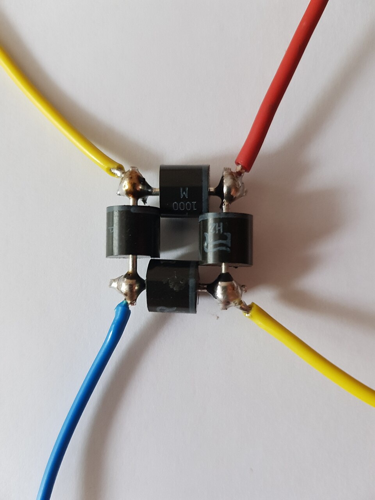
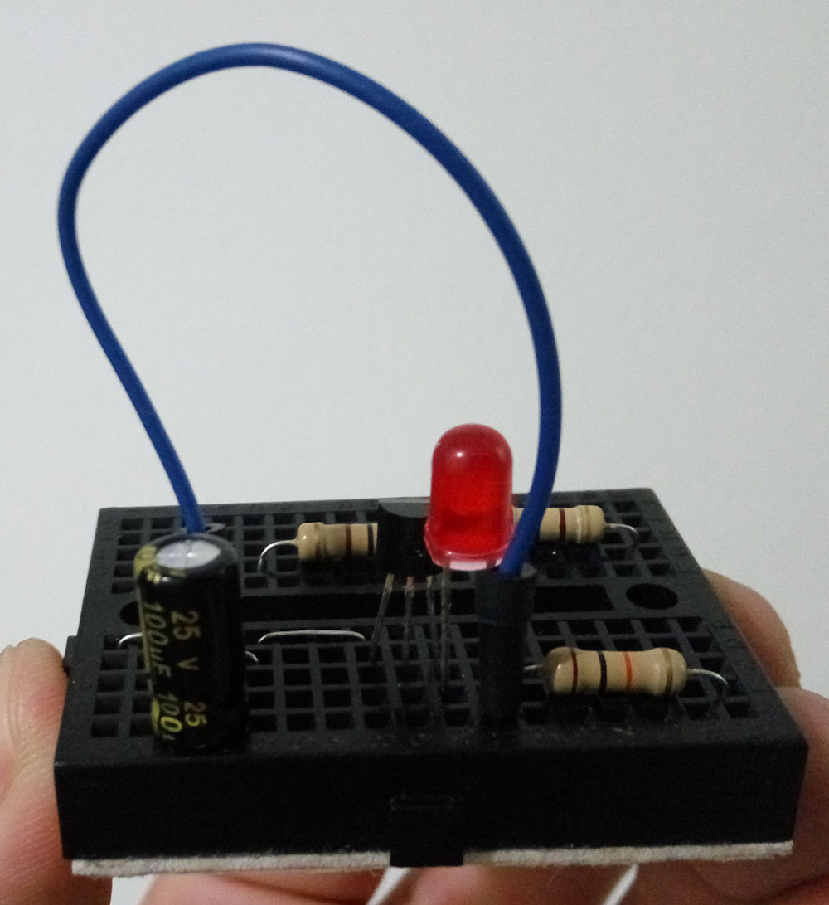
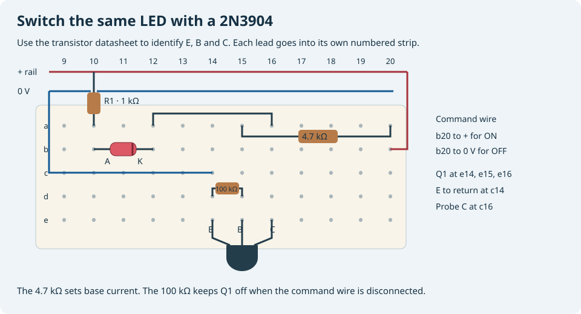
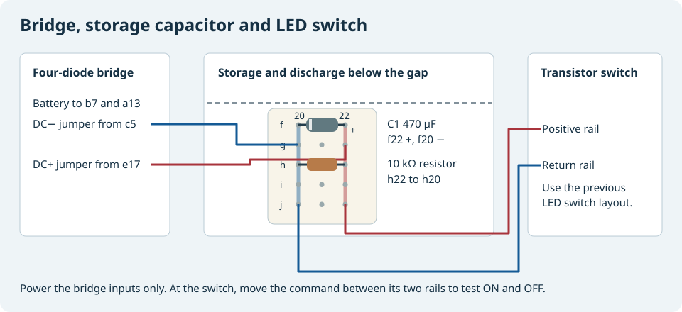

Build your first breadboard circuits
Start with a battery, resistor and LED. Add one idea at a time until a rectifier and capacitor power a transistor-controlled indicator. A meter is enough for the battery exercises.

Photo by Zeroping. Original photo · CC BY 4.0.

Watch the steps as you build. In the breadboard video, pause on the hidden clips. In the diode video, follow the two conducting diodes on each half-cycle. In the transistor video, follow the small control current and the separate load current. Moritz Klein · Beginner's guide to breadboards · Afrotechmods · Diodes and AC-to-DC conversion · Afrotechmods · Transistor and MOSFET tutorial.
Buy or borrow one bench kit
| Quantity and part | What to use | India source or photo credit |
|---|---|---|
| 1 · Full-size solderless breadboard View breadboard | 830-point board with the centre gap, five-hole strips and side rails. Add 10 solid-core insulated jumpers or 22 AWG solid hook-up wire. Look for holes marked a–e above the gap. | RoboticsDNA · MB102 board, ₹84.99 listed · Photo · Evan-Amos, public domain, resized. |
| 1 + 3 · Holder and cells View holder | Three 1.5 V alkaline cells in series, nominal 4.5 V. Use a holder with insulated leads and an on/off switch. Check red and black with the meter. Bare stranded ends need a solid jumper or protected adapter for the breadboard. | RoboticsDNA · Three-AAA switched holder, ₹49.01 listed. Buy matching cells locally. |
| 6 · Axial resistors View resistors | One 100 Ω at ≥0.5 W, two 1 kΩ at ≥0.25 W, and one each of 4.7 kΩ, 10 kΩ and 100 kΩ at ≥0.25 W. Use ±5% or better. Check the values with the meter before fitting. | Buy single pieces at an electronics shop or use element14 India · Axial resistors by value and wattage. Photo · David Ludovino, CC BY-SA 3.0, resized. |
| 1 · Red LED View LED leads | Plain 5 mm red, two leads, about 2 V forward, with a nominal current rating of 10 mA or more. Buy a high-efficiency red type that can be seen at a few milliamps. Find its anode and cathode before inserting. | Ask a local electronics shop for a discrete red LED. element14 India · Discrete LEDs · Photo · Elmepi, CC BY 2.0. |
| 4 · 1N4007 silicon diodes View cathode band | Through-hole axial rectifiers, such as Vishay 1N4007-E3/54. Use one in the first two diode builds, then reuse it with three more for the bridge. | element14 India · Vishay 1N4007 · Photo · Vonvon, CC BY-SA 3.0. |
| 1 · Electrolytic capacitor View capacitor packages | 470 µF, 16 V, radial through-hole, such as Panasonic EEUFR1C471. The negative stripe faces circuit return. Use leads that span about two 2.54 mm hole pitches without strain, or adapt to a nearby free strip with a jumper. | element14 India · ₹75.61 listed · Photo · Elcap, CC0. |
| 1 · NPN transistor View transistor | Through-hole onsemi 2N3904BU, TO-92. Datasheet pin numbers 1, 2 and 3 are emitter, base and collector. Identify them using the package drawing for the part in hand. | element14 India · Order 1700648, check minimum quantity · onsemi datasheet · Photo · Windell Oskay, CC BY 2.0. |


The listed breadboard and battery holder total ₹134 before cells, other components and delivery. Use a digital multimeter with continuity, diode test, resistance and DC volts. Connect the black lead to COM and the red lead to the voltage/ohms jack for this entire exercise. Switch off for every wiring change and use the meter in continuity, diode or ohms mode only on unpowered circuits. View meter Photo · Anselm Schüler, CC BY-SA 4.0.


1. Close a loop and light an LED
A numbered group of five holes shares one clip. For example, a8 and b8 connect under the plastic. The centre gap separates a–e from f–j. With a bare board and the holder disconnected, check a8 to b8, a8 to a9, a8 to f8 and the end-to-end path of each rail in continuity mode. A beep confirms a connection. The + and − rails should stay open to each other. Put each supply lead and its jumpers on the same unbroken section of its rail.
- Connect the holder red wire to the + rail and black to the − rail. With it switched off, put the 1 kΩ resistor from + to a8. Put the LED anode in b8 and cathode in b10. Put a jumper from a10 to −.
- Switch on. The LED lights on a closed loop. Measure across the resistor in DC volts. A reading of 2.6 V gives 2.6 mA through 1 kΩ. Expect roughly 2–3.3 mA with fresh cells and a typical red LED. Then switch off, lift the return jumper and switch back on. The LED should be dark. Restore the jumper with the power off.
- For a second resistor-only exercise, follow P04 to put the two equal 1 kΩ resistors in series. Measure half the pack voltage where they meet, then compare series and parallel resistance with the battery disconnected. P04 · Series, parallel and voltage dividers.

2. Turn a diode around, then try half-wave rectification
- With a loose 1N4007 and the meter in diode mode, put the red probe on the unbanded anode and black on the banded cathode. Expect about 0.5–0.8 V. Reverse the probes and expect OL. Note that the 1N4007 and the LED are both diodes and have different forward voltage drops.
- In your LED circuit move the resistor end from + to b6 and leave its other end in a8. Put the 1N4007 from + to a6, band at a6. Power on. The LED should light with less current. Measure across the diode, then across the resistor. Switch off, reverse the diode and repeat. The LED should go dark and the resistor drop should approach zero.
- For a single-diode rectifier, clear the LED circuit and reuse its 1 kΩ resistor. Use the former + rail as input A and the other rail as input B. Put 100 Ω from A to a4, the 1N4007 from b4 to a6 with the band at a6, and 1 kΩ from b6 to B. Measure across the 1 kΩ load with red at c6 and black at B. The meter should show a few volts with battery red at A, then close to 0 V with the battery reversed.
- To observe half-wave rectification, switch off and remove the battery holder. Under supervision, connect an enclosed, isolated 4–6 V AC bench source to A and B with the 100 Ω resistor still in series. Only one half-cycle drives the load. The meter in DC mode shows the average across the 1 kΩ load. See the waveforms in P06 · Rectifiers on the bench.


3. Build a bridge that keeps the load polarity


Photo by MarBar SK, resized. Original photo · CC BY-SA 4.0.

Clear the previous circuit, then build on the upper half of the board. The two input nodes and two output nodes each get their own strip. Keep long component leads slightly above the board so they only make contact at the specified holes. Leave the power rails free for the later transistor circuit.
| Component | First hole | Second hole |
|---|---|---|
| D1 | b9 · anode | b17 · band |
| D2 | c13 · anode | c17 · band |
| D3 | d5 · anode | d9 · band |
| D4 | e5 · anode | e13 · band |
| R0 · 100 Ω | a7 | a9 |
| RL · 1 kΩ | a5 · DC− | a17 · DC+ |
- Clip or plug the source leads into b7 and a13. Leave 100 Ω in series with the input. With red on b7 and black on a13, measure DC from d17 (+) to b5 (−). Expect a positive reading, around 2.5–3.8 V for a healthy 4.5 V pack under the 1 kΩ load.
- Switch off and swap the source leads only at b7 and a13. Turn on and repeat with the meter probes in the same positions. The reading stays positive. In the first position, D1 and D4 conduct. In the reversed position, D2 and D3 conduct. Explain how both routes cross the load from 17 to 5.
- For actual AC, switch off and remove the battery holder completely. Use the same isolated 4–6 V AC source at the two input holes and the same 100 Ω limiter. Across RL in DC mode, look for a positive average. P06 shows the two pulses per input cycle. Return to the battery supply before the next stages.
4. Store charge and watch it drain
- With power off, remove the 1 kΩ load from columns 5 and 17. Use a jumper from c5 to g20 for DC− and a jumper from e17 to g22 for DC+. This puts the new nodes below the centre gap. Put the 470 µF capacitor positive at f22 and its stripe-marked negative at f20. Fit the 10 kΩ resistor from h22 to h20 as the discharge path.
- Connect the battery to the bridge input again. With the meter on the capacitor, charge for several seconds and record the stable voltage. Switch the holder off and start timing. The capacitor voltage should fall gradually. With 10 kΩ, the estimated time constant is 4.7 seconds. A starting 3.4 V would fall to about 1.25 V after 4.7 seconds. The capacitor tolerance and meter timing affect the result.
- Repeat with the capacitor removed after the meter shows below 0.1 V. The voltage now drops as soon as the source is switched off. With an AC source, the same storage effect fills the gaps between rectified pulses and reduces ripple. P07 · Capacitor charge and smoothing.
5. Use a transistor to switch the LED


Photo by Camilofigueroa. Original photo · CC BY-SA 4.0.

Keep the bridge intact for the final exercise. Build the switch on a second board or on columns 29–40 of the same board. For the second location, add 20 to every column number below. For example, e14 becomes e34. Connect the direct battery to that area's rails for this test only. Check for a split rail to choose the right section.


- Keep E, B and C in separate strips. Insert the identified leads into e14 (E), e15 (B) and e16 (C). Use a jumper from c14 to the return rail. Build the LED path with 1 kΩ from + to a10, LED anode b10, LED cathode b12, and a jumper from a12 to a16.
- Put the 4.7 kΩ resistor from a20 to a15 and the 100 kΩ resistor from d15 to d14. Use a jumper from b20 to + for ON or to − for OFF. Switch the source off each time you move the command jumper. With ON, expect roughly 0.55–0.85 V between B and E, under 0.3 V between C and E, and a lit LED. With OFF, expect the base near 0 V, negligible voltage across the LED's series resistor, and a dark LED.
- Measure across 4.7 kΩ and across 1 kΩ with ON. For example, 3.8 V across 4.7 kΩ gives 0.81 mA into the base branch. A 2.5 V drop across 1 kΩ gives 2.5 mA in the LED branch. Identify where each current enters the transistor. T12 · BJT theory · P08 · BJT, MOSFET and relay switching.
6. Combine the blocks and find a fault


- Switch off and disconnect the holder from the transistor rails. Connect bridge DC+ at j22 to the transistor area's positive rail and bridge DC− at j20 to its return rail. Keep the capacitor and 10 kΩ resistor across the bridge output. Connect the battery only to the bridge inputs.
- Try the transistor OFF and ON in both input lead orientations. The LED should respond to the command in both. It will usually be dimmer than directly on the pack because two rectifier diodes drop voltage. Compare the bridge output and LED resistor voltage under load. In ON, if the supply at the switch is below about 2.7 V, check battery voltage and diode orientation before changing component values.
- Switch off and wait for the capacitor to read below 0.1 V. Ask someone to remove one unpowered jumper. On the next check, follow input, bridge output, base and LED branch in that order. Record the first reading that disagrees with the known-good circuit. Reconnect and repeat.
Next builds. A potentiometer gives you an adjustable input for a divider. A relay coil introduces the inductor and a flyback diode that uses your first diode concept again. A timer combines a capacitor and resistors to create repeating pulses. Build one variation at a time using the linked exercises. The readings on this page are calculated expectations for bench checking. The photographs show credited examples. P12 · Potentiometer and sensor input · P109 · Relay coil and flyback diode · P09 · Make a 555 timer blink an LED.
T26 · Move the first circuit from spring clips to copper P184 · Next build a switch input and divider P126 · Follow the workshop route through to a soldered product